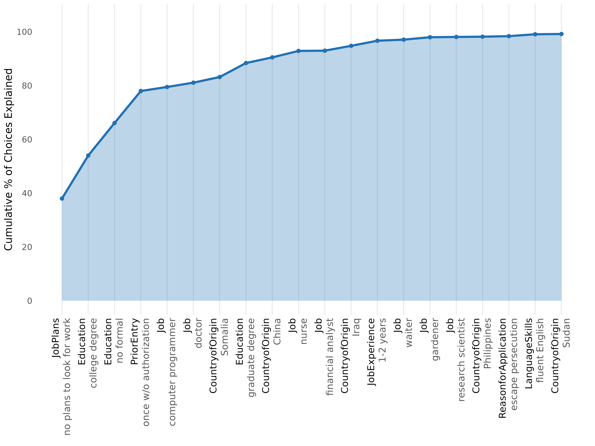

When to use
Use method = "nmm" (Dill, Howlett & Mueller-Crepon
2024) when you care about the order in which attribute levels
settle choices, not just their static importance. NMM is the closest
match to elimination- by-aspects (Tversky 1972) at the level of
attribute levels.
The procedure works sequentially:
- Identify the level whose marginal mean deviates most from 50/50 — the most decisive level.
- Remove choice tasks where that level cannot discriminate (because both profiles share it).
- Repeat on the reduced sample.
The cumulative plot shows how quickly the top levels account for the total decisiveness.
Fit
nmm <- cj_fit(f, data = immig, method = "nmm",
resp_id = "CaseID", n_boot = 0)
nmm
#> Conjoint Nested Marginal Means
#> ==============================
#>
#> Observations: 2,000
#> Attributes: 9
#> Levels: 50
#>
#> Total pairs: 1,000
#> After top 5: 205 (20.5% remaining)
#>
#> Top 10 levels by decisiveness:
#>
#> # A tibble: 10 × 6
#> rank attribute level mm decisiveness pct_of_total
#> <int> <chr> <chr> <dbl> <dbl> <dbl>
#> 1 1 JobPlans no plans to look for w… 0.305 0.389 38
#> 2 2 Education college degree 0.687 0.375 16
#> 3 3 Education no formal 0.331 0.339 12.1
#> 4 4 PriorEntry once w/o authorization 0.303 0.395 11.9
#> 5 5 Job computer programmer 0.733 0.467 1.5
#> 6 6 Job doctor 0.688 0.375 1.6
#> 7 7 CountryofOrigin Somalia 0.714 0.429 2.1
#> 8 8 Education graduate degree 0.712 0.423 5.2
#> 9 9 CountryofOrigin China 0.762 0.524 2.1
#> 10 10 Job nurse 0.667 0.333 2.4Plot the cumulative explanation curve
plot(nmm, top_n = 20)
A steep early curve = a strong decision-order hierarchy: a few top-ranked levels settle most of the choices. A flat curve = compensatory processing, where many levels each contribute a little.
Related
- Decision Tree for an alternative hierarchical representation that uses CART splits instead of marginal means.
- Random Forest for static level importance without an ordering assumption.